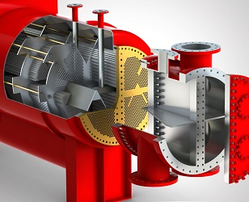

Condensador

Esto se consigue enfriando el vapor en un intercambiador adecuado. Normalmente se utiliza agua para enfriar el vapor. Por esta razón las centrales nucleares se sitúan al lado de algún río o del mar.